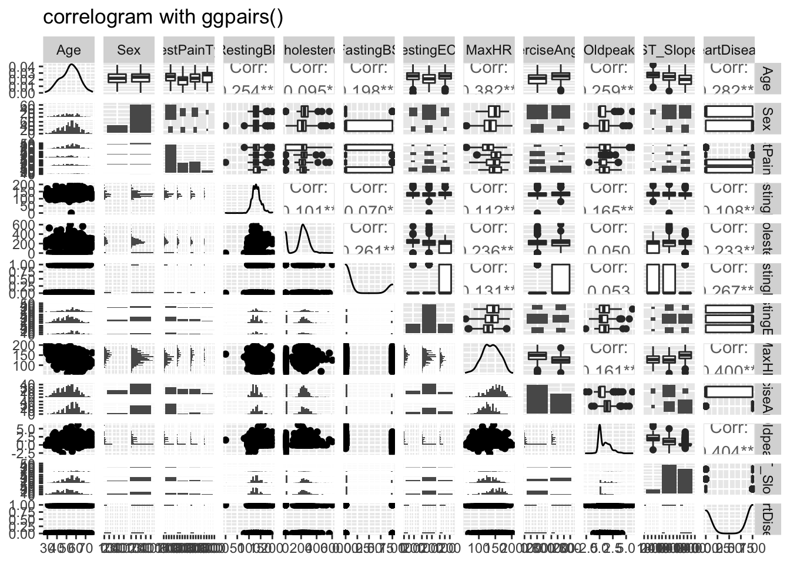
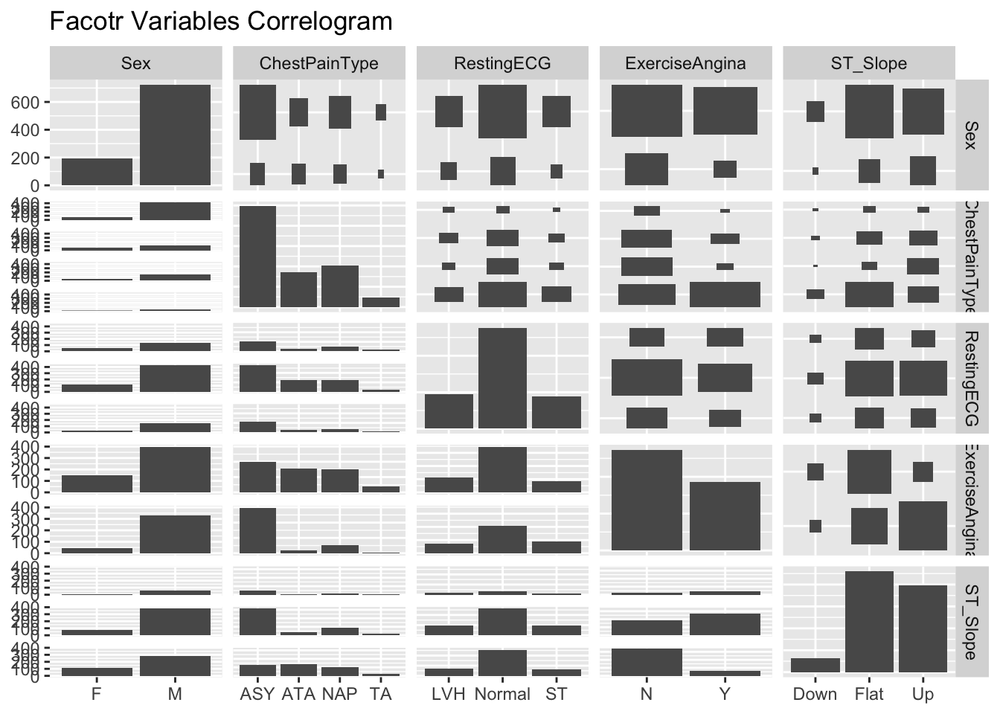

Chapter 2 EDA
Firstly, we load the data and convert all character variables to factor variables.
## 'data.frame': 918 obs. of 12 variables:
## $ Age : int 40 49 37 48 54 39 45 54 37 48 ...
## $ Sex : Factor w/ 2 levels "F","M": 2 1 2 1 2 2 1 2 2 1 ...
## $ ChestPainType : Factor w/ 4 levels "ASY","ATA","NAP",..: 2 3 2 1 3 3 2 2 1 2 ...
## $ RestingBP : int 140 160 130 138 150 120 130 110 140 120 ...
## $ Cholesterol : int 289 180 283 214 195 339 237 208 207 284 ...
## $ FastingBS : int 0 0 0 0 0 0 0 0 0 0 ...
## $ RestingECG : Factor w/ 3 levels "LVH","Normal",..: 2 2 3 2 2 2 2 2 2 2 ...
## $ MaxHR : int 172 156 98 108 122 170 170 142 130 120 ...
## $ ExerciseAngina: Factor w/ 2 levels "N","Y": 1 1 1 2 1 1 1 1 2 1 ...
## $ Oldpeak : num 0 1 0 1.5 0 0 0 0 1.5 0 ...
## $ ST_Slope : Factor w/ 3 levels "Down","Flat",..: 3 2 3 2 3 3 3 3 2 3 ...
## $ HeartDisease : int 0 1 0 1 0 0 0 0 1 0 ...## Age Sex ChestPainType RestingBP Cholesterol FastingBS RestingECG MaxHR
## 1 40 M ATA 140 289 0 Normal 172
## 2 49 F NAP 160 180 0 Normal 156
## 3 37 M ATA 130 283 0 ST 98
## 4 48 F ASY 138 214 0 Normal 108
## 5 54 M NAP 150 195 0 Normal 122
## ExerciseAngina Oldpeak ST_Slope HeartDisease
## 1 N 0.0 Up 0
## 2 N 1.0 Flat 1
## 3 N 0.0 Up 0
## 4 Y 1.5 Flat 1
## 5 N 0.0 Up 0Let examine the data first, Here is te correlogram of all the numeric variables of the data. 
Based on the result, we can see that there are some correlations between variables. Hence, I decide to include the linear model, logiatic models and the ramdom forest model as candidate models.
To build and test the models, we split data with 80/20.